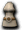

一般｜四重鎧甲｜天上－善屬性｜天上－惡屬性
名稱為橘色的是可以附魔的物品。另外，未鑑定名稱是該道具在未鑑定狀態下的名稱。
提供情報或編輯請求，請到情報提供公佈欄、編輯公佈欄。
一般
| 名稱 | 價格 | 限制 | 職業 | Wei | 取得方式 |
 克雷斯菲特 克雷斯菲特 | 400 | Lv1 | 戰修盜騎阿聖魔預吟 | 2 | 米魯里斯：雜貨店盧亞斯：雜貨店斯歐米：雜貨店魔界村：鐵匠鋪魔界村：雜貨店魯克西翁：雜貨店 |
| 能力 | AC-4 |
| 名稱 | 價格 | 限制 | 職業 | Wei | 取得方式 |
 克雷斯斯塔迪未鑑定名稱:練功服 | 200 | Lv1 | 戰修盜騎阿聖魔預吟 | 2 | 斯皮羅寶箱（深茶） |
| 能力 | AC-3、MC-3、CON+1 |
| 名稱 | 價格 | 限制 | 職業 | Wei | 取得方式 |
| 克雷斯菲特 | 200 | Lv1 | 戰修盜騎阿聖魔預吟 | 4 |  波特 波特 |
| 能力 | AC-4 |
| 名稱 | 價格 | 限制 | 職業 | Wei | 取得方式 |
 長老武道之魂 長老武道之魂 | 200 | Lv1 | 戰修盜騎阿聖魔預吟 | 8 | Q:師父與弟子 |
| 能力 | AC-6、HP+100、SP+100 |
| 備註 | 標示為不可附魔 |
| 名稱 | 價格 | 限制 | 職業 | Wei | 取得方式 |
 卡波耶拉菲特 卡波耶拉菲特 | 4,400 | Lv11 | 戰修盜騎阿聖魔預吟 | 5 | 米魯里斯：雜貨店盧亞斯：雜貨店斯歐米：雜貨店魔界村：鐵匠鋪魔界村：雜貨店魯克西翁：雜貨店庫娜 |
| 能力 | AC-7 |
| 名稱 | 價格 | 限制 | 職業 | Wei | 取得方式 |
| 卡波耶拉維爾德未鑑定名稱:練功服 | 2,200 | Lv11 | 戰修盜騎阿聖魔預吟 | 5 | [梅恩德哥拉]寶箱(深茶) |
| 能力 | AC-6、MC-5、CON+1、DEX+1 |
| 名稱 | 價格 | 限制 | 職業 | Wei | 取得方式 |
| 卡波耶拉菲特 | 2,200 | Lv11 | 戰修盜騎阿聖魔預吟 | 6 |  札斯特、 札斯特、 迪斯 迪斯 |
| 能力 | AC-7 |
| 名稱 | 價格 | 限制 | 職業 | Wei | 取得方式 |
 科扎克緊身衣皮特 科扎克緊身衣皮特 | 16,600 | Lv21 | 戰修盜騎阿聖魔預吟 | 9 | 魔界村：鐵匠鋪、 瘋狂獨眼怪 瘋狂獨眼怪 |
| 能力 | AC-12 |
| 名稱 | 價格 | 限制 | 職業 | Wei | 取得方式 |
| 科札克羅巴斯提未鑑定名稱:胴衣 | 8,300 | Lv21 | 戰修盜騎阿聖魔預吟 | 5 | 魔瓜[魔瓜] |
| 能力 | AC-9、MC-8、STR+1、CON+2、DEX+1 |
| 名稱 | 價格 | 限制 | 職業 | Wei | 取得方式 |
| 科扎克緊身衣皮特 | 8,300 | Lv21 | 戰修盜騎阿聖魔預吟 |  YOYO諾肯[阿英] YOYO諾肯[阿英] | |
| 能力 | AC-12 |
| 名稱 | 價格 | 限制 | 職業 | Wei | 取得方式 |
| 巴舒卡吊帶衫 | 10 | Lv21 | 戰修盜騎阿聖魔預吟 | 9 | Q:百鬼夜行 |
| 能力 | AC-19、MC-13、VD:7天 |
| 名稱 | 價格 | 限制 | 職業 | Wei | 取得方式 |
| 博道緊身衣皮特 | 58,900 | Lv31 | 戰修盜騎阿聖魔預吟 | 10 | 魔界村：鐵匠鋪 |
| 能力 | AC-18 |
| 名稱 | 價格 | 限制 | 職業 | Wei | 取得方式 |
| 波達烏卡拉傑未鑑定名稱:胴衣 | 31,000 | Lv31 | 戰修盜騎阿聖魔預吟 | 6 | 德雷薩 |
| 能力 | AC-12、MC-11、STR+1、CON+2、DEX+2 |
| 名稱 | 價格 | 限制 | 職業 | Wei | 取得方式 |
| 搏擊手兜帽 | 10 | Lv31 | 戰修盜騎阿聖魔預吟 | 10 | Q:百鬼夜行四十一之鬼 |
| 能力 | AC-28、MC-17、VD:7天 |
| 名稱 | 價格 | 限制 | 職業 | Wei | 取得方式 |
| 博道緊身衣皮特 | 31,000 | Lv41 | 戰修盜騎阿聖魔預吟 | 12 |  亞茲魔 亞茲魔 |
| 能力 | AC-18 |
| 名稱 | 價格 | 限制 | 職業 | Wei | 取得方式 |
 西拉特緊身衣皮特 西拉特緊身衣皮特 | 164,000 | Lv51 | 戰修盜騎阿聖魔預吟 | 13 | 魔界村：鐵匠鋪 |
| 能力 | AC-24 |
| 名稱 | 價格 | 限制 | 職業 | Wei | 取得方式 |
| 希拉特皮爾斯未鑑定名稱:拳法服 | 82,000 | Lv51 | 戰修盜騎阿聖魔預吟 | 13 |  札摩庫、血櫻蝸牛 札摩庫、血櫻蝸牛 |
| 能力 | AC-15、MC-14、STR+2、CON+3、DEX+2 |
| 名稱 | 價格 | 限制 | 職業 | Wei | 取得方式 |
| 夜叉旗袍 | 10 | Lv51 | 戰修盜騎阿聖魔預吟 | 13 | Q:百鬼夜行五十九之鬼 |
| 能力 | AC-35、MC-20、VD:7天 |
| 名稱 | 價格 | 限制 | 職業 | Wei | 取得方式 |
| 西拉特緊身衣皮特 | Lv61 | 戰修盜騎阿聖魔預吟 | 18 |  彩券 彩券 | |
| 能力 | AC-24 |
| 名稱 | 價格 | 限制 | 職業 | Wei | 取得方式 |
 武道之魂 武道之魂 | 5,000 | Lv61,FLv5 | 戰修盜騎阿聖魔預吟 | - | Q:扭曲命運的武器 |
| 能力 | AC-30、MC-15、HP20、SP20 |
| 備註 | 露卡的禮物。強化了從長老領主處得到的衣服能力 |
| 名稱 | 價格 | 限制 | 職業 | Wei | 取得方式 |
 手之大師 手之大師 | 484,000 | Lv71 | 戰修盜騎阿聖魔預吟 | 16 | 伊卡洛斯：鐵匠鋪、裝備彩券 |
| 能力 | AC-35 |
| 名稱 | 價格 | 限制 | 職業 | Wei | 取得方式 |
| 格拉普巴迪未鑑定名稱:拳法服 | 242,000 | Lv71 | 戰修盜騎阿聖魔預吟 | 12 | 雷比亞：鐵匠鋪、 寶箱(金)、卡雷瓦拉森林２ 寶箱(金)、卡雷瓦拉森林２ |
| 能力 | AC-18、MC-17、STR+2、CON+4、DEX+3 |
| 名稱 | 價格 | 限制 | 職業 | Wei | 取得方式 |
| 手之大師 | 242,000 | Lv71 | 戰修盜騎阿聖魔預吟 | 24 | |
| 能力 | AC-32 |
| 名稱 | 價格 | 限制 | 職業 | Wei | 取得方式 |
| 火星瓦爾薩克 | 50,000 | Lv71 | 戰修盜騎阿聖魔預吟 | 16 | 格蘭德派斯(紅) |
| 能力 | AC-35 |
| 備註 | 麻痺防禦(PCount:80) |
| 名稱 | 價格 | 限制 | 職業 | Wei | 取得方式 |
| 保鑣束腰 | 10 | Lv71 | 戰修盜騎阿聖魔預吟 | 16 | Q:百鬼夜行七十四之鬼 |
| 能力 | AC-40、MC-23、VD:7天 |
| 名稱 | 價格 | 限制 | 職業 | Wei | 取得方式 |
 覺醒女裝 覺醒女裝 | 0 | Lv61 | 戰修盜騎阿聖魔預吟 | 16 | 2010回歸箱 |
| 能力 | AC-43、MC-22、HP50、STR+1、CON+5、ADD5%、MDD5% |
| 備註 | 30天內，覺醒被封印能力的鎧甲。經過期間後會消失 |
| 名稱 | 價格 | 限制 | 職業 | Wei | 取得方式 |
| 野獸皮甲 | 10,000,000 | Lv81 | 戰修盜騎阿聖魔預吟 | 19 | 卡雷瓦拉：鐵匠鋪 |
| 能力 | AC-40 |
| 名稱 | 價格 | 限制 | 職業 | Wei | 取得方式 |
| 野蠻人皮甲 | 100,000 | Lv81 | 戰修盜騎阿聖魔預吟 | 19 | [幽靈弗里克爾]雪魔劍士(藍) |
| 能力 | AC-39、MC-20、STR+3、CON+5、WIS+1、DEX+3 |
| 名稱 | 價格 | 限制 | 職業 | Wei | 取得方式 |
| 野獸皮甲 | 1,000,000 | Lv81 | 戰修盜騎阿聖魔預吟 | 19 | 死亡蛋殼三角龍 |
| 能力 | AC-40 |
| 名稱 | 價格 | 限制 | 職業 | Wei | 取得方式 |
 拳師緊身衣 拳師緊身衣 | 2,000,000 | Lv91 | 戰修盜騎阿聖魔預吟 | 21 | 魔界村：鐵匠鋪、［長老迪斯］(附魔) |
| 能力 | AC-45 |
| 名稱 | 價格 | 限制 | 職業 | Wei | 取得方式 |
| 大師魔法緊身衣 | 200,000 | Lv91 | 戰修盜騎阿聖魔預吟 | 21 | [冰霜貴族]冰霜貴族(藍)、艾尼斯泰米 |
| 能力 | AC-43、MC-22、STR+4、CON+6、WIS+1、DEX+3 |
| 名稱 | 價格 | 限制 | 職業 | Wei | 取得方式 |
| 火蜥蜴皮 | 100,000 | Lv91,FLv21 | 戰修盜騎阿聖魔預吟 | 19 | [冰霜貴族]冰霜貴族(紅)、九十九之鬼 |
| 能力 | AC-39 |
| 備註 | 麻痺防禦(PCount:80) |
| 名稱 | 價格 | 限制 | 職業 | Wei | 取得方式 |
| 那迦羅闍衣 | 10 | Lv91,FLv41 | 戰修盜騎阿聖魔預吟 | 19 | Q:百鬼夜行 |
| 能力 | AC-44、MC-25、VD:7天 |
| 名稱 | 價格 | 限制 | 職業 | Wei | 取得方式 |
 奧斯提亞希爾拉鎧甲 奧斯提亞希爾拉鎧甲 | 300,000 | Lv91,FLv21 | 戰修盜騎阿聖魔預吟 | 22 | Q:雷皮翁攻略 |
| 能力 | AC-37、MC-19 |
| 備註 | 支給給最優秀船員的榮耀之衣。據說能給海軍無限的榮譽，給海盜無限的智慧的衣裝 |
| 名稱 | 價格 | 限制 | 職業 | Wei | 取得方式 |
 迪洛佐希爾拉鎧甲 迪洛佐希爾拉鎧甲 | 300,000 | Lv95,FLv25 | 戰修盜騎阿聖魔預吟 | 22 |  船長拉爾普 船長拉爾普 |
| 能力 | AC-40、MC-21、HP+30、SP+30 |
| 備註 | 據說是歷史上最可怕的海盜團的衣服。到現在看到這件衣服仍會感到恐懼。 |
| 名稱 | 價格 | 限制 | 職業 | Wei | 取得方式 |
| 奴隸女武道家鎖甲 | 300,000 | Lv95,FLv35 | 戰修盜騎阿聖魔預吟 | 24 | Q:火龍的地城 |
| 能力 | AC-44、MC-27、CON+5、HP+100、SP+100 |
| 備註 | 中毒防禦(PCount:50)封印克里莫拉克夏的證明。可以用火龍之鱗強化。 |
| 名稱 | 價格 | 限制 | 職業 | Wei | 取得方式 |
| 奴隸女武道家鎖甲 | - | Lv95,FLv35 | 戰修盜騎阿聖魔預吟 | 21 | Q:火龍升級 |
| 能力 | AC-44、MC-27、CON+5、HP+100、SP+100+(HP?、ADDown?、MDDown?) |
| 備註 | 中毒防禦(PCount:50)封印克里莫拉克夏的證明。以火龍之鱗強化後的型態。 |
| 名稱 | 價格 | 限制 | 職業 | Wei | 取得方式 |
| 迪捷雷德長衣 | 1,358,000 | Lv95,FLv35 | 戰修盜騎阿聖魔預吟 | 26 | Q:赫爾西翁製造 |
| 能力 | AC-43、MC-32、HP+120、SP+160 |
| 備註 | 據說是反抗神的天使們所穿的鎧甲 |
| 名稱 | 價格 | 限制 | 職業 | Wei | 取得方式 |
| 蒂亞雷德長衣 | 1,750,000 | Lv97,FLv45 | 戰修盜騎阿聖魔預吟 | 26 | Q:赫爾西翁升級 |
| 能力 | AC-46、MC-33、HP+150、SP+170 |
| 備註 | 強化迪捷雷德長衣的鎧甲。擁有卓越的防禦性能。 |
| 名稱 | 價格 | 限制 | 職業 | Wei | 取得方式 |
| 大師緊身衣 | 10 | Lv99,FLv61 | 戰修盜騎阿聖魔預吟 | 21 | Q:百鬼夜行 |
| 能力 | AC-47、MC-27、HP+100、SP+100、VD:7天 |
| 名稱 | 價格 | 限制 | 職業 | Wei | 取得方式 |
 迦梨神殿 迦梨神殿 | 10 | Lv99,FLv61 | 戰修盜騎阿聖魔預吟 | 21 | Q:百鬼夜行 |
| 能力 | AC-47、MC-27、HP+100、SP+100 |
| 名稱 | 價格 | 限制 | 職業 | Wei | 取得方式 |
| 混亂狂奔 | 10 | Lv99,FLv61 | 戰修盜騎阿聖魔預吟 | 21 | 達尼佰型改 |
| 能力 | AC-47、MC-27、HP+100、SP+100 |
泰特拉鎧甲
| 名稱 | 價格 | 限制 | 職業 | Wei | 取得方式 |
| 泰特拉女修行服 | 20,000 | Lv1 | 戰修盜騎阿聖魔預吟 | 0 | Q:四重鎧甲 |
| 能力 | AC-10、MC-15、AAR+3、SAR+3 |
| 備註 | [不可轉讓][不可放置地面]以古代文明失落的物質製成的職業服。沒有重量，可以變形為自己想要的形狀 |
| 形狀變化 | Lv2 | Lv3 | Lv4 | Lv5 | Lv6 | Lv7 | Lv8 |
| 名稱 | 價格 | 限制 | 職業 | Wei | 取得方式 | | |
| 泰特拉女修行服AG | 200,000 | Lv1 | 戰修盜騎阿聖魔預吟 | 0 | Q:四重鎧甲 | | |
AC-21、MC-30、AAR+6、SAR+6
備註：[不可轉讓][不可放置地面]以古代文明失落的物質製成的職業服。沒有重量，可以變形為自己想要的形狀
| 形狀變化 | Lv2 | Lv3 | Lv4 | Lv5 | Lv6 | Lv7 | Lv8 |
| 名稱 | 價格 | 限制 | 職業 | Wei | 取得方式 | | |
| 泰特拉女修行服UG | 2,000,000 | Lv1 | 戰修盜騎阿聖魔預吟 | 0 | Q:四重鎧甲 | | |
AC-35、MC-50、AAR+10、SAR+10
備註：[不可轉讓][不可放置地面]以古代文明失落的物質製成的職業服。沒有重量，可以變形為自己想要的形狀
| 形狀變化 | Lv2 | Lv3 | Lv4 | Lv5 | Lv6 | Lv7 | Lv8 |
天上－善屬性
| 名稱 | 價格 | 限制 | 職業 | Wei | 取得方式 |
| 帕爾塞斯哈維 | 100,000 | Lv91,FLv31TLv1,BLv1 | 戰修盜騎阿聖魔預吟 | 23 |  赤紅默斯基普 赤紅默斯基普 |
| 能力 | [4階段封印時]AC-43、MC-25、HP+60、SP+60 |
| 名稱 | 價格 | 限制 | 職業 | Wei | 取得方式 |
| 帕爾塞斯哈維 | 100,000 | Lv91,FLv31TLv11,BLv11 | 戰修盜騎阿聖魔預吟 | 23 | 封印解除 |
| 能力 | AC-43、MC-25、HP+140、SP+140 |
| 備註 | 封印已解除的帕爾塞斯哈維 |
帕爾塞斯哈維-升級
| 1階段 | 2階段 | 3階段 | 4階段 | 5階段 | 附魔值 |
| 無法升級 | 無法升級 | RAC1～3 | | | |
| 名稱 | 價格 | 限制 | 職業 | Wei | 取得方式 |
| 帕爾塞斯帕爾塞斯哈維 | - | Lv91,FLv31TLv11,BLv11 | 戰修盜騎阿聖魔預吟 | 23 | 天空千里行 |
AC-43、MC-25、HP+160、SP+160、CON+1、VD:7天
備註：天空千里行的鎧甲。善女勇士用。被賦予1週的勝者權力與力量。
| 名稱 | 價格 | 限制 | 職業 | Wei | 取得方式 |
| 克修倫哈維 | 200,000 | Lv93,FLv41TLv31,BLv31 | 戰修盜騎阿聖魔預吟 | 25 | [地獄火]岩漿狂徒（水） |
| 能力 | [4階段封印時]AC-44、MC-28、HP+70、SP+70 |
| 名稱 | 價格 | 限制 | 職業 | Wei | 取得方式 |
| 克修倫哈維 | 200,000 | Lv93,FLv41TLv41,BLv41 | 戰修盜騎阿聖魔預吟 | 25 | 封印解除 |
| 能力 | AC-44、MC-28、HP+150、SP+150 |
| 備註 | 封印已解除的克修倫哈維 |
克修倫哈維-升級
| 1階段 | 2階段 | 3階段 | 4階段 | 5階段 | 附魔值 |
| RAC1～3 | | | | | |
| 名稱 | 價格 | 限制 | 職業 | Wei | 取得方式 |
| 盧米納哈維 | 300,000 | Lv95,FLv51TLv61,BLv61 | 戰修盜騎阿聖魔預吟 | 27 |  骷髏守衛 骷髏守衛 |
[4階段封印時]AC-45、MC-31、HP+80、SP+80
備註：
| 名稱 | 價格 | 限制 | 職業 | Wei | 取得方式 |
| 盧米納哈維 | 300,000 | Lv95,FLv51TLv71,BLv71 | 戰修盜騎阿聖魔預吟 | 27 | 緹亞潔封印解除 |
| 能力 | AC-45、MC-31、HP+160、SP+160 |
| 備註 | 封印已解除的盧米納哈維 |
盧米納哈維-升級
| 1階段 | 2階段 | 3階段 | 4階段 | 5階段 | 附魔值 |
| RAC1～3 | | | | | |
| 名稱 | 價格 | 限制 | 職業 | Wei | 取得方式 |
| 利赫涅哈維 | 400,000 | Lv97,FLv61TLv81,BLv81 | 戰修盜騎阿聖魔預吟 | | |
[4階段封印時]AC-46、MC-34、HP+90、SP+90
備註：
| 名稱 | 價格 | 限制 | 職業 | Wei | 取得方式 |
| 利赫涅哈維 | 400,000 | Lv97,FLv61TLv91,BLv91 | 戰修盜騎阿聖魔預吟 | | |
| 能力 | - |
利赫涅哈維-升級
天上－惡屬性